library(readr)
library(dplyr)
library(ggplot2)
library(gridExtra)df <- read_csv("../cleaned_data.csv")
head(df)## # A tibble: 6 x 8
## Color Rating Opponent Opponent_rating Result Opening Moves Year
## <chr> <dbl> <chr> <dbl> <chr> <chr> <dbl> <dbl>
## 1 White 2736 Peter T Robers… 2435 Win Réti Opening 40 2020
## 2 White 2736 Lazaro Bruzon … 2640 Win King's Indian… 53 2020
## 3 Black 2736 Justin Tan 2511 Draw Ruy López Ope… 14 2020
## 4 Black 2736 David L Haydon 2294 Win Réti Opening 54 2020
## 5 Black 2736 Leinier Doming… 2758 Win Giuoco Piano … 58 2020
## 6 Black 2736 Le Quang Liem 2713 Win Queen's Gambi… 47 2020# count of win, draw, loss
overall_win <- df %>%
group_by(Result) %>%
summarise(Count = n())
# vars for inline code
ngame <- summarise(df, n()) %>% as.character()
wins <- overall_win[3, 2] %>% as.character()
loss <- overall_win[2, 2] %>% as.character()
draw <- overall_win[1, 2] %>% as.character()
wr <- round(as.numeric(wins) / as.numeric(ngame) * 100, 2)
# plot
overall_win %>%
ggplot(aes(x = reorder(Result, -Count), y = Count)) +
geom_bar(stat = "identity", width = 0.6) +
labs(
title = "Comparison of number of wins, losses, and draws",
x = "Result"
) +
theme_light()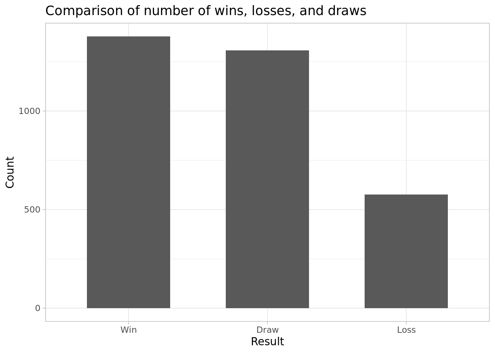 His win percentage is 42.24 %. Out of 3262 games, 1378 are wins, 576 are losses, and 1308 are draws. Most of his games end in either a win or a draw.
# ratio of win, draw, loss by color
winrate <- df %>%
group_by(Color, Result) %>%
summarise(count = n()) %>%
mutate(Percentage = count / sum(count) * 100) %>%
select(-count)
# vars for inline code
w_wr <- round(winrate[6, 3], 2) %>% as.character()
b_wr <- round(winrate[3, 3], 2) %>% as.character()
# plot
winrate %>%
ggplot(aes(x = Color, y = Percentage, fill = Result)) +
geom_bar(stat = "identity", position = "fill", width = 0.6) +
coord_flip() +
labs(
title = "Ratio of Wins, Losses & Draws Grouped by Color",
y = "Win : Loss : Draw"
) +
guides(fill = guide_legend(reverse = TRUE)) +
theme_light()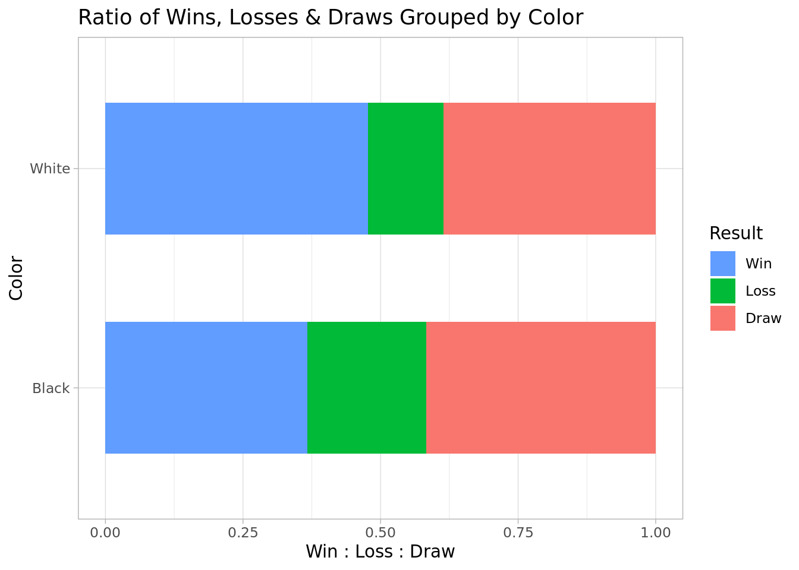 His win-rate as white is 47.74 %, which is higher than his win-rate as black 36.7 %. Win to loss to draw ratio is roughly the same as white or black.
# openings and their game count
overall_op <- df %>%
group_by(Opening) %>%
summarise(N_games = n()) %>%
arrange(desc(N_games))
# top 10 most played openings
head(overall_op, 10) %>%
ggplot(aes(x = reorder(Opening, N_games), y = N_games)) +
geom_bar(stat = "identity") +
coord_flip() +
labs(
title = "Most Played Openings Overall",
x = "Opening",
y = "Number of Games"
) +
theme_light()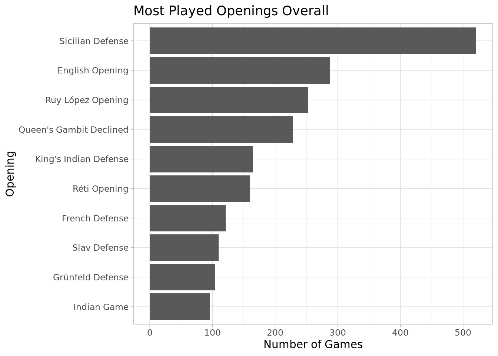
# top 10 most played openings grouped by color
top_by_color <- df %>%
group_by(Color, Opening) %>%
summarise(N_games = n()) %>%
top_n(n = 10, wt = N_games)
# top 10 most played openings by white
white <- head(top_by_color, 10) %>%
ggplot(aes(x = reorder(Opening, N_games), y = N_games)) +
geom_bar(stat = "identity") +
coord_flip() +
labs(
title = "Most Played Openings as White",
x = "Openings",
y = "Number of Games"
) +
theme_light()
# top 10 most played openings by black
black <- tail(top_by_color, 10) %>%
ggplot(aes(x = reorder(Opening, N_games), y = N_games)) +
geom_bar(stat = "identity") +
coord_flip() +
labs(
title = "Most Played Openings as Black",
x = "Openings",
y = "Number of Games"
) +
theme_light()
grid.arrange(white, black)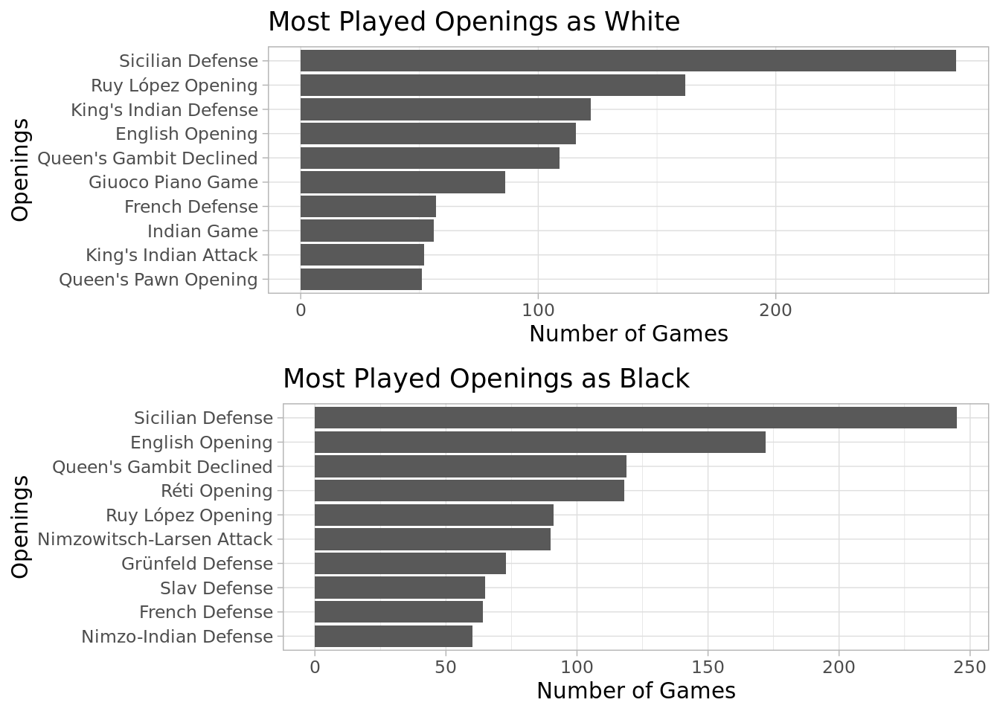 It looks like the most played opening is the sicilian defense for both white and black. This might happen because there are many variations of the sicilian defense, but all of them are grouped together in the data.
# results against/not-against higher rated opponents
vs_higher <-df %>%
mutate(Vs_higher = if_else(Opponent_rating > Rating, "yes","no")) %>%
group_by(Vs_higher, Result) %>%
summarise(count = n()) %>%
mutate(Percentage = count / sum(count) * 100) %>%
select(-count) %>%
arrange(desc(Vs_higher))
# vars for inline code
highdraw <- round(vs_higher[1, 3], 2) %>% as.character()
lowwin <- round(vs_higher[6, 3], 2) %>% as.character()
#plot
vs_higher %>%
ggplot(aes(x = Vs_higher, y = Percentage, fill = Result)) +
geom_bar(stat = "identity", width = 0.6) +
coord_flip() +
labs(
title = "Ratio of Game Results Against & not Against Higher-Rated Opponents",
x = "Against Higher-Rated Opponents?",
y = "Win : Loss : Draw"
) +
guides(fill = guide_legend(reverse = TRUE)) +
theme_light()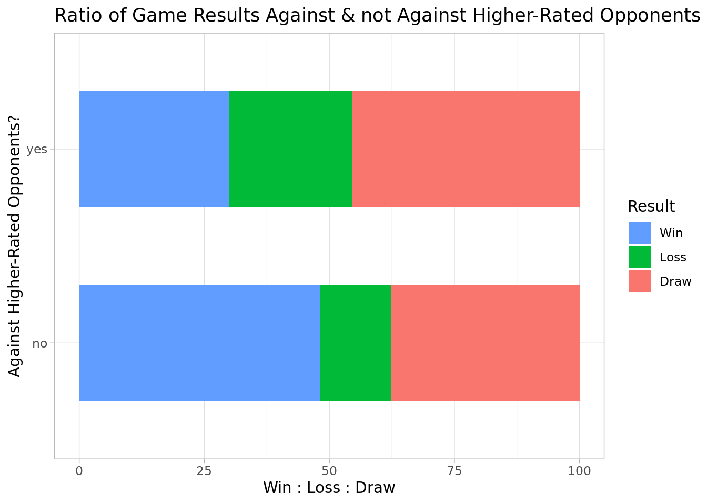 Against higher-rated opponents, nearly half of his games end in a draw. More specifically 45.37 %. His win-rate is only slightly higher than his lose rate. On the other hand, 48.14 % of his games against lower-rated opponents are wins.
# avg number of moves
avg_mv <- round(mean(df$Moves)) %>% as.character()
# move count distribution
df %>%
ggplot(aes(x = Moves)) +
geom_histogram(binwidth = 5) +
labs(
title = "Distribution of Number of Moves in a Game",
x = "Number of Moves",
y = "Count"
) +
theme_light()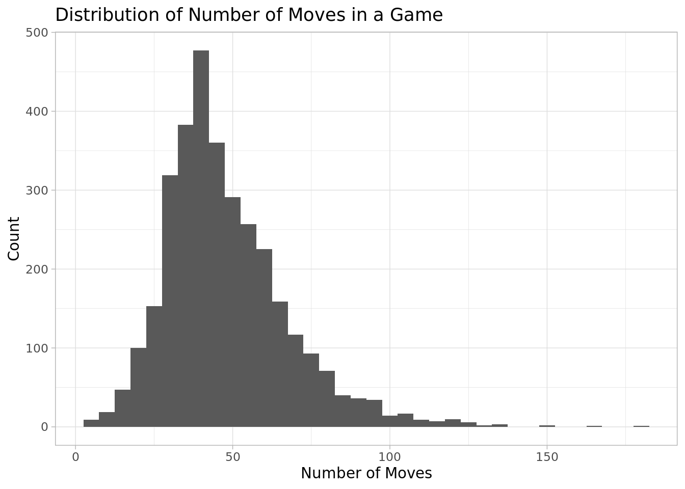 The average number of moves of his games is 48 moves.
# avg moves for win/draw/loss plot
df %>%
group_by(Result) %>%
summarise(Mean_moves = mean(Moves)) %>%
ggplot(aes(x = reorder(Result, Mean_moves), y = Mean_moves)) +
geom_bar(stat = "identity", width = 0.6) +
labs(
title = "Average move counts of different game results",
x = "Results",
y = "Average move count"
) +
theme_light()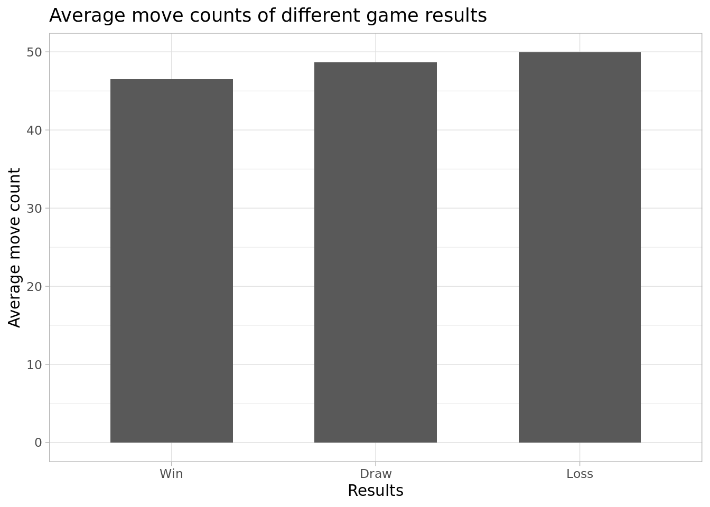 The average move count is roughly the same for wins, losses, and draws. Number of moves is unlikely to effect game results.
# highest rating of each year 2003-2020
df %>%
group_by(Year) %>%
filter(Year > 2002) %>%
summarise(highest_rt = max(Rating, na.rm = TRUE)) %>%
ggplot(aes(x = Year, y = highest_rt)) +
geom_line() +
scale_x_continuous(breaks = seq(2002, 2020, 2)) +
labs(
title = "Yearly Highest Rating from 2003 to mid 2020",
y = "Rating"
) +
theme_light()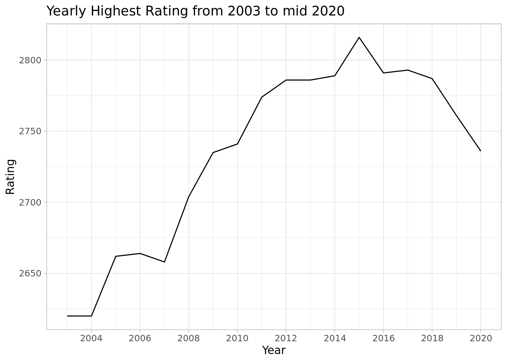
max_rt <- max(df$Rating) %>% as.character()This chart starts from 2003, the year he became a GM. His highest rating was 2816 back in 2015.
# top 10 most played opponents
reg_opp <- df %>%
group_by(Opponent) %>%
summarise(n = n()) %>%
arrange(desc(n)) %>%
head(10)
# top 10 barchart
reg_opp %>%
ggplot(aes(x = reorder(Opponent, n), y = n)) +
geom_bar(stat = "identity", width = 0.6) +
coord_flip() +
labs(
title = "Top 10 Players He Plays with Most Often",
x = "Opponent",
y = "Number of games played"
) +
theme_light()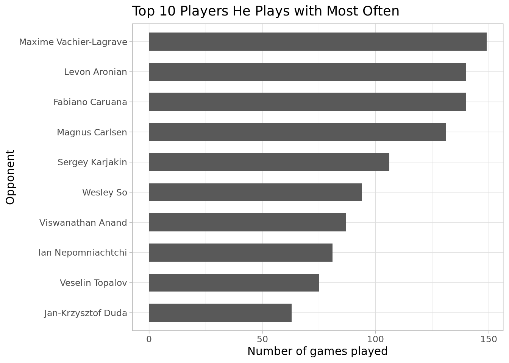
# w/d/l ratio
df %>%
group_by(Opponent, Result) %>%
filter(Opponent %in% reg_opp$Opponent) %>%
summarise(n = n()) %>%
ggplot(aes(x = Opponent, y = n, fill = Result)) +
geom_bar(stat = "identity",position = "fill", width = 0.6) +
coord_flip() +
labs(
title = "Results Against Players He Plays With Most Often",
x = "Opponent",
y = "Win : Loss : Draw"
) +
guides(fill = guide_legend(reverse = TRUE)) +
theme_light()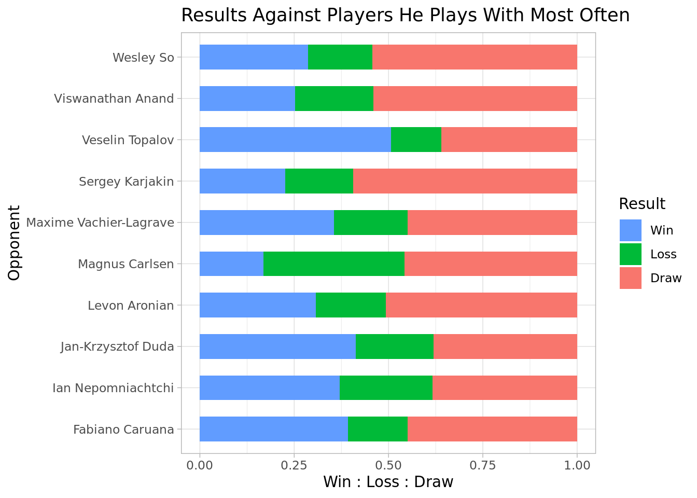 Against the players he plays with most often, the result is usually a draw. His win-rates are higher than his lose-rates except against Magnus Carlsen, the world champion.
before doing the test, I filtered the data to include only openings that were played
atleast 20 times. The null hypothesis is that there is no relationship between the opening played, the piece color, and the game result. The alternative hypothesis is that there is a relationship. Alpha value is 0.05.
# openings with game number > 20
freq_op <- df %>%
group_by(Opening) %>%
summarise(count = n()) %>%
filter(count > 20)
# colors, openings, results
op_res <- df %>%
select(Color, Opening, Result) %>%
filter(Opening %in% freq_op$Opening)
# cochran-mantel-haenszel tes on op_res
tb <- table(op_res$Color, op_res$Opening, op_res$Result)
mantelhaen.test(tb)##
## Cochran-Mantel-Haenszel test
##
## data: tb
## Cochran-Mantel-Haenszel M^2 = 432.41, df = 29, p-value < 2.2e-16The p-value is significantly lower than the alpha value. The null hypothesis is rejected.
# top 10 op overal
df %>%
filter(Opening %in% op_res$Opening) %>%
group_by(Opening, Result) %>%
summarise(Count = n()) %>%
mutate(Winrate = round(Count / sum(Count) * 100, 2)) %>%
filter(Result == "Win") %>%
select(-Count, -Result) %>%
arrange(desc(Winrate)) %>%
head(10) %>%
ggplot(aes(x = reorder(Opening, Winrate), y = Winrate)) +
geom_bar(stat = "Identity", width = 0.6) +
coord_flip() +
scale_y_continuous(limits = c(0, 100)) +
labs(
title = "Top 10 Win-Rates of Openings Overall",
x = "Opening",
y = "Win-rate in percentages(%)"
) +
theme_light()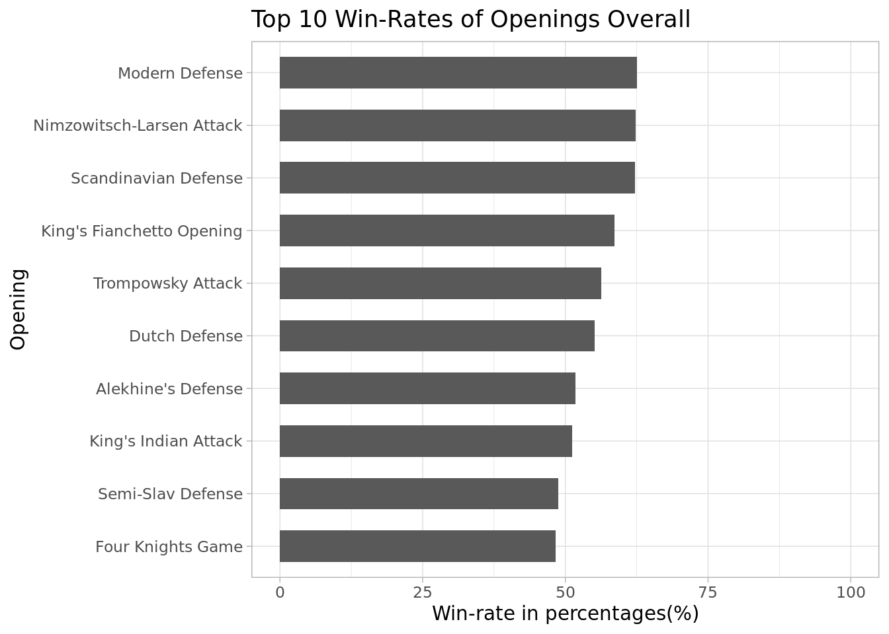
# top 10 white op
opw <- df %>%
filter(Opening %in% op_res$Opening) %>%
group_by(Color, Opening, Result) %>%
summarise(Count = n()) %>%
mutate(Winrate = round(Count / sum(Count) * 100, 2)) %>%
filter(Result == "Win" & Color == "White") %>%
select(-Count, -Result) %>%
arrange(desc(Winrate)) %>%
head(10) %>%
ggplot(aes(x = reorder(Opening, Winrate), y = Winrate)) +
geom_bar(stat = "Identity", width = 0.6) +
coord_flip() +
scale_y_continuous(limits = c(0, 100)) +
labs(
title = "Top 10 Win-rates of Openings Played as White",
x = "Opening",
y = "Win-Rate in Percentages(%)"
) +
theme_light()
# top 10 black op
opb <- df %>%
filter(Opening %in% op_res$Opening) %>%
group_by(Color, Opening, Result) %>%
summarise(Count = n()) %>%
mutate(Winrate = round(Count / sum(Count) * 100, 2)) %>%
filter(Result == "Win" & Color == "Black") %>%
select(-Count, -Result) %>%
arrange(desc(Winrate)) %>%
head(10) %>%
ggplot(aes(x = reorder(Opening, Winrate), y = Winrate)) +
geom_bar(stat = "Identity", width = 0.6) +
coord_flip() +
scale_y_continuous(limits = c(0, 100)) +
labs(
title = "Top 10 Win-rates of Openings Played as Black",
x = "Opening",
y = "Win-Rate in Percentages(%)"
) +
theme_light()
grid.arrange(opw, opb)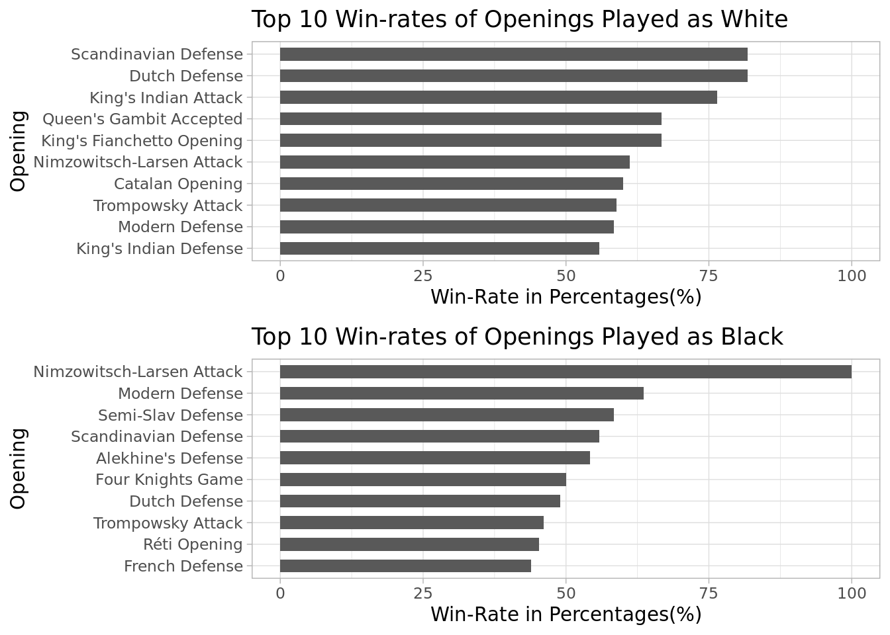